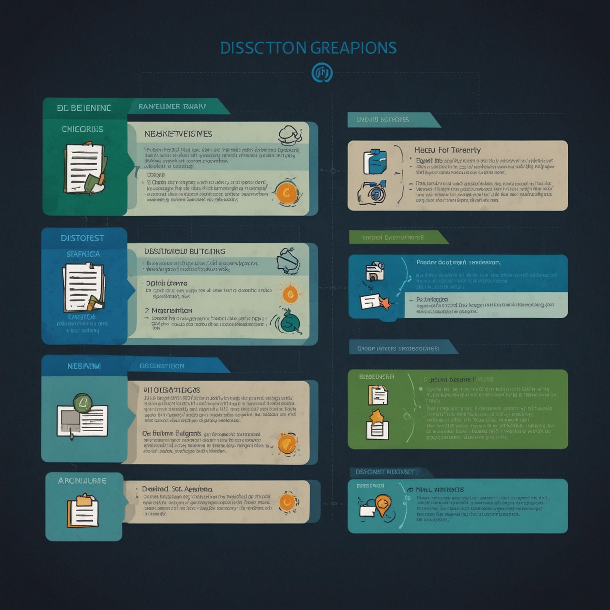
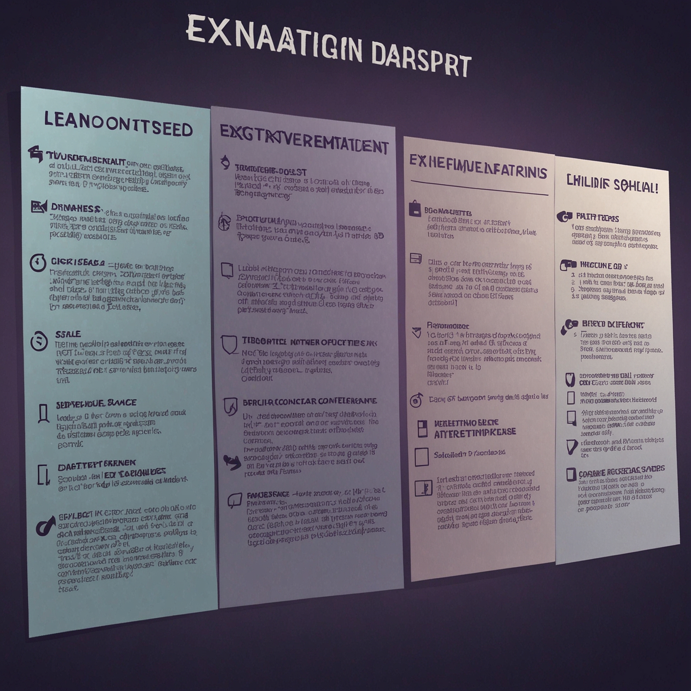

事案の概要
本件は、大阪市周辺でタクシー事業を営む事業者(X)が、消費税転嫁のため3%の運賃値上げを内容とする運賃変更認可申請を近畿運輸局長に提出したところ、約4か月以上経過した後に「適正原価適正利潤基準に適合するか否かを判断するに足りる資料の提出がない」として却下された事案である。
Xは、平成元年の消費税施行時には運賃変更の認可申請をせず、また、平成3年3月に同業他社が運賃変更の認可申請をして認可されていたにもかかわらず、認可申請をしなかった。その直後の3月29日に、消費税転嫁のための3%値上げを内容とする運賃変更認可申請を行った。
この時点で、Xと同業他社との間には約14.2%の運賃格差が生じていた。
近畿運輸局長は、Xに対し、運賃原価算定基準に準拠した原価計算の根拠等を説明するよう求めたが、Xは「消費税分の転嫁である」と陳述するのみで、具体的な計算根拠を明らかにしなかった。
そこで、運輸局長は、道路運輸法9条の3第2項1号に定める「能率的な経営の下における適正な原価に適正な利潤を加えたもの」(適正原価適正利潤基準)に適合するか否かを判断するに足りる資料がないとして、申請を却下した。
Xは、この却下処分が違法であるとして、国を相手取って国家賠償請求訴訟を提起した。
最高裁判所の判断(最判平成11年7月19日判時1688号123頁)
最高裁判所は、原審判決を支持し、Xの上告を棄却した。
裁量の存否：
道路運輸法9条の3第2項1号の適正原価適正利潤基準は、抽象的、概括的なものである。この基準に適合するか否かを判断するには、行政庁の専門技術的な知識経験と公益上の判断を必要とする。したがって、運輸行政における専門的、技術的見地からの裁量的判断の要素が含まれており、ある程度の裁量的要素があることを否定することはできない。
本件への当てはめ：
運輸局長は、Xに対し、運賃原価算定基準に準拠した個別審査のため、原価計算の根拠等を説明するよう求めた。しかし、Xは消費税分の転嫁であると陳述するのみで、具体的な計算根拠を明らかにしなかった。
このような状況の下で、運輸局長が、適正原価適正利潤基準に適合するか否かを判断するに足りるだけの資料の提出がないとして、本件申請を却下したことは、裁量権を逸脱し、又はこれを濫用した違法はない。
裁量基準とは何か
裁量基準とは、行政庁が裁量処分を行う際に、判断の統一性・公平性・透明性を確保するために、あらかじめ定める内部的な基準のことです。
行政庁には、多数の類型的な事案を迅速かつ公平に処理することが求められます。そこで、個別事案の判断に先立って、どのような場合にどのような処分を行うかという基準を定めておくことにより、判断の一貫性を保ち、行政の恣意を抑制し、国民の予測可能性を高めることができます。
行政手続法は、申請に対する処分について、「審査基準」(行政手続法5条)を定めることを求め、また、不利益処分について、「処分基準」(行政手続法12条)を定めるよう努力義務を課しています。
裁量基準は、あくまで行政庁内部の基準であり、それ自体が法規範ではありません。したがって、個別事案において特別の事情がある場合には、裁量基準と異なる判断をすることも許されます。
しかし、裁量基準が公表されている場合、行政庁は、正当な理由なく裁量基準と異なる取扱いをすることはできません。平等原則や信頼保護の観点から、裁量基準に一定の自己拘束的効果が認められるからです。
本件の適正原価適正利潤基準は、道路運輸法という法律に規定された基準ですが、その内容は抽象的・概括的であり、この基準をどのように具体化して個別事案に適用するかは、行政庁の専門技術的判断に委ねられています。
申請に対する処分における裁量
行政処分は、その発動の形式により、「申請に対する処分」と「不利益処分」に大別されます。
申請に対する処分とは、国民が行政庁に対して一定の行為を求める申請を行い、これに対して行政庁が許可・認可などの応答をする処分です。許可、認可、免許、特許などがこれに当たります。
これに対し、不利益処分とは、行政庁が国民に義務を課し、又はその権利を制限する処分です。営業停止処分、免許取消処分などがこれに当たります。
申請に対する処分においても、行政庁に裁量が認められることがあります。典型的には、許可基準が抽象的・概括的に定められている場合です。
本件の運賃変更認可は、申請に対する処分(認可)の一種です。道路運輸法は、運賃変更について、運輸大臣(当時)の認可を受けなければならないと定めていますが、認可の基準として「適正な原価に適正な利潤を加えたもの」という抽象的な基準を定めるにとどまっています。
この基準は、タクシー運賃の適正性を確保し、利用者保護と事業者の経営安定という公益を実現するためのものですが、何が「適正な原価」で何が「適正な利潤」かは、一義的に決まるものではありません。
そこで、最高裁は、この基準への適合性判断には、専門技術的知識と公益上の判断を要するとして、運輸行政庁に一定の裁量を認めたのです。
適正原価適正利潤基準の意義
適正原価適正利潤基準とは、公共料金の認可において広く用いられる基準の一つです。
この基準は、事業者が能率的な経営を行った場合に生じる費用(適正な原価)に、適正な利潤を加えた額を超えない範囲で料金を設定すべきであるという考え方に基づいています。
タクシー事業は、公共交通機関として、利用者の利便と事業の健全な発展を両立させる必要があります。運賃が高すぎれば利用者に過度の負担を強いることになり、低すぎれば事業者の経営が成り立たず、サービスの質が低下するおそれがあります。
そこで、道路運輸法は、適正原価適正利潤基準により、利用者保護と事業者保護のバランスを図ろうとしています。
しかし、何が「適正な原価」かを判断するには、原価計算の方法、費用項目の範囲、能率的経営の基準など、高度に専門技術的な判断を要します。また、何が「適正な利潤」かも、事業の公共性、他業種との比較、資本の効率性など、政策的な判断を含みます。
したがって、適正原価適正利潤基準への適合性判断は、行政庁の専門技術的・政策的裁量に属するものとされるのです。
ただし、このことは、行政庁が恣意的に判断してよいということを意味するものではありません。行政庁は、合理的な算定方法に基づき、客観的な資料に基づいて判断しなければなりません。
裁量基準への適合性審査と裁量権
裁量基準が定められている場合、行政庁はこれに従って処分を行うことが原則です。しかし、裁量基準自体が抽象的・概括的である場合、個別事案において裁量基準に適合するか否かを判断する際にも、行政庁に一定の裁量が認められます。
本件では、道路運輸法が「適正な原価に適正な利潤を加えたもの」という抽象的な基準を定めており、この基準への適合性を判断するために、運輸局長が運賃原価算定基準を策定していました。
しかし、運賃原価算定基準に基づいて個別の運賃変更申請を審査する際にも、申請者の経営実態、原価の妥当性、利潤の適正性など、専門技術的な判断を要する事項が多数あります。
そこで、最高裁は、適正原価適正利潤基準への適合性判断には、「専門技術的な知識経験と公益上の判断を必要とする」として、運輸局長に一定の裁量を認めました。
ただし、この裁量は無制限のものではありません。行政庁は、合理的な審査方法に基づき、必要な資料を収集し、客観的に判断しなければなりません。また、判断過程において、考慮すべき事項を考慮せず、又は考慮すべきでない事項を考慮した場合には、裁量権の逸脱・濫用として違法となります。
本件において、運輸局長は、申請者に対し、運賃原価算定基準に準拠した個別審査のため、原価計算の根拠等を説明するよう求めました。これは、適正原価適正利潤基準への適合性を客観的に判断するための合理的な措置といえます。
申請者がこの要求に応じず、具体的な計算根拠を明らかにしなかったため、運輸局長は判断に必要な資料がないとして申請を却下しました。最高裁は、この判断には裁量権の逸脱・濫用がないと判断したのです。
資料提出義務と申請者の協力義務
本判決は、申請者が行政庁の資料提出要求に応じず、必要な資料を提出しなかった場合に、申請を却下することができることを明らかにしました。
申請に対する処分においては、申請者が申請の根拠となる事実を証明する責任を負うのが原則です。これを「立証責任」といいます。
特に、専門技術的な判断を要する事項については、申請者が必要な資料を提出し、申請内容の妥当性を説明することが求められます。行政庁は、提出された資料に基づいて審査を行い、基準への適合性を判断します。
申請者が必要な資料を提出しない場合、行政庁は適合性を判断することができません。この場合、行政庁が職権で調査を行うべきか、それとも申請を却下してよいかが問題となります。
本判決は、行政庁が合理的な範囲で資料提出を求めたにもかかわらず、申請者がこれに応じなかった場合には、申請を却下することができるとしました。
ただし、行政庁の資料提出要求が過度に詳細であったり、申請者にとって提出が困難であったりする場合には、却下処分が違法となる可能性があります。行政庁は、申請者の負担と審査の必要性のバランスを考慮して、合理的な範囲で資料提出を求めなければなりません。
本件では、運輸局長が運賃原価算定基準に準拠した個別審査のため、原価計算の根拠等を説明するよう求めたことは、適正原価適正利潤基準への適合性を判断するために必要かつ合理的な措置であり、申請者にとっても提出可能な資料であったと考えられます。
それにもかかわらず、申請者が「消費税分の転嫁である」と陳述するのみで、具体的な計算根拠を明らかにしなかったことは、申請者の協力義務違反といえます。
したがって、運輸局長が申請を却下したことは、裁量権の範囲内の適法な判断であると判断されたのです。
本判決の意義と実務への影響
本判決は、申請に対する処分における行政庁の裁量と、申請者の資料提出義務について、重要な判断を示しました。
第一に、本判決は、法律が抽象的・概括的な基準を定めている場合、その基準への適合性判断には、専門技術的知識と公益上の判断を要するとして、行政庁に一定の裁量を認めました。これは、申請に対する処分においても、覊束処分と裁量処分の区別があることを明確にしたものです。
第二に、本判決は、行政庁が裁量基準への適合性を判断するために必要な資料の提出を求めることができ、申請者がこれに応じない場合には、申請を却下することができることを明らかにしました。これにより、申請者の資料提出義務と協力義務の法的根拠が明確になりました。
第三に、本判決は、行政手続における申請者と行政庁の役割分担を明確にしました。申請者は、申請内容の妥当性を証明する責任を負い、必要な資料を提出しなければなりません。他方、行政庁は、合理的な範囲で資料提出を求め、提出された資料に基づいて公正かつ客観的に審査しなければなりません。
第四に、本判決は、公共料金の認可という公益性の高い分野において、行政庁の専門性と裁量を尊重する姿勢を示しました。ただし、このことは行政庁の恣意を許すものではなく、合理的な審査方法と客観的な判断が求められることは当然です。
本判決以後、行政実務においては、申請に対する処分において、申請者に対して必要な資料の提出を求め、提出がない場合には申請を却下するという運用が確立されています。
また、行政庁は、どのような資料が必要かを明確にするため、申請手続における必要書類や審査基準を詳細に定め、公表するようになりました。これにより、申請者の予測可能性が高まり、円滑な行政手続が実現されています。
参考文献
最高裁判所判例(最判平成11年7月19日判時1688号123頁)を基に独自に作成